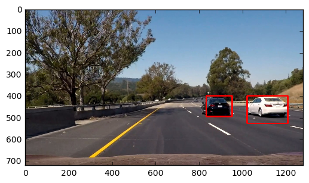
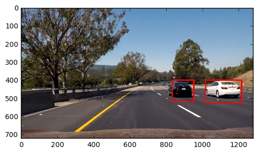
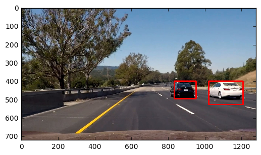
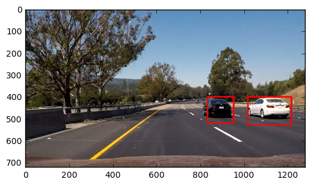
integrated heatmap
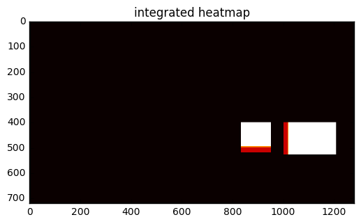
output of applying labels() on integrated heatmap
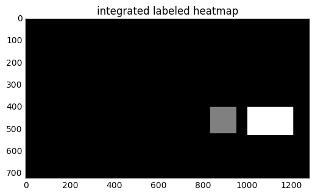
resulting bounding boxes for the last frame
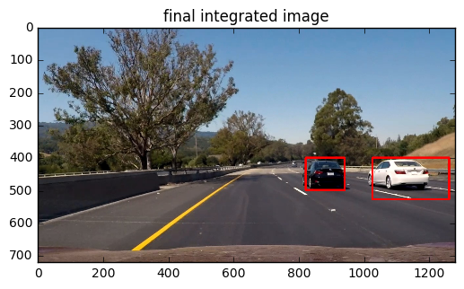
Vehicle Detection Project
The goals / steps of this project are the following:
You're reading it!
The code for this step is contained in the function get_hog_features of the IPython notebook.
I started by reading in all the vehicle and non-vehicle images. Here is an example of one of each of the vehicle and non-vehicle classes:
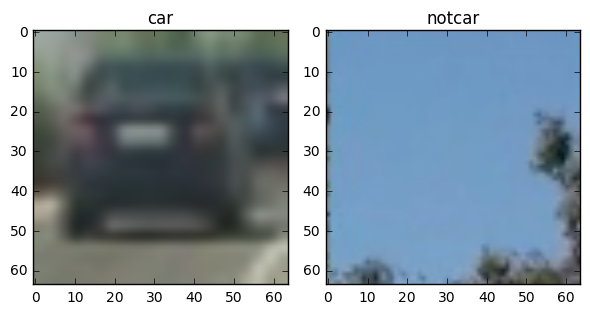
I then explored different color spaces and different skimage.hog() parameters (orientations, pixels_per_cell, and cells_per_block). I grabbed random images from each of the two classes and displayed them to get a feel for what the skimage.hog() output looks like.
Here is an example using the GRAY color space and HOG parameters of orientations=9, pixels_per_cell=(8, 8) and cells_per_block=(2, 2):
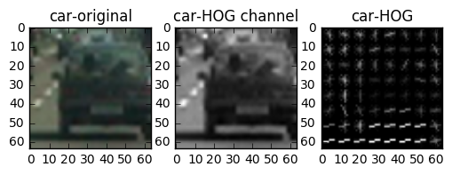 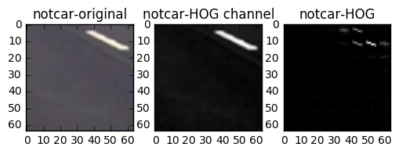
I mainly tried different colorspaces, eg. YCrCb with all channels, U in LUV (the one which worked for me in Project #4), but I noticed there is not much difference among them. So to reduce features I chose the simplest grayscale image.
I did not tweak other HOG parameters that much.
To train the classifier, first I obtained a feature vector by concatenating HOG features + color histogram features (with original RGB image) + spatial features. Then I normalized using StandardScalar(). The final feature vector has a length of 2580.
I used a Linear SVM as my classifier.
For the training data, I split all vehicle + nonvehicle data randomly into 90% training and 10% test data, using sklearn's train_test_split method. I also run a 5-fold cross validation.
The test accuracy of the classifier is around 97%.
Code for this step is in cell 7-9.
I used 3 sizes of windows at different portions of image:
I used HOG sub-sampling method in Lesson 33 (code in find_cars() function). With a cells_per_step=2, each window size translate to these overlaps:
It looks like this with all boxes plotted:
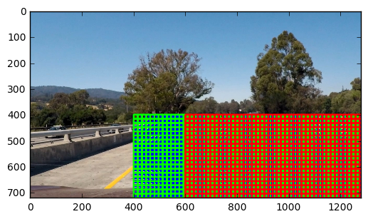
Here are some example images:
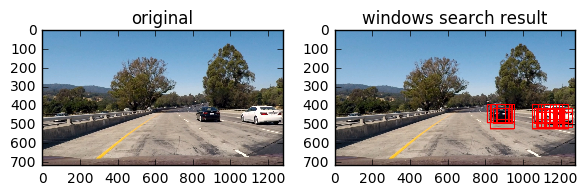 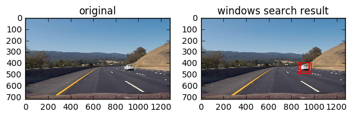 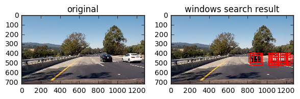
I used Python's multiprocessing module to speed up subsampling of HOG features, using a Pool of 12 threads. The parallel code can be found in function find_cars, specifically this line:
pool.map(partial(hog_parallel.get_hog_feature_parallel, hogs = [hog1], nblocks_per_window = nblocks_per_window), fs)
where hog_parallel is a separate Python module (see hog_parallel.py file) I imported into notebook to work around the issue that iPython notebook does not support multiprocessing out of box on Windows.
As to the classifier performance, I did mainly two things:
svm.decision_function() and only take predictions when decision_function() > 2. This ensures I'm only taking high-confident predictions and reduce false positives.
Here's a link to my video result
I used a "double-heatmap" approach, applying one heatmap per frame, then applying another heatmap across frames.
First I recorded the positions of positive detections in each frame of the video. From the positive detections I created a heatmap and then thresholded that map to identify vehicle positions. I then used scipy.ndimage.measurements.label() to identify individual blobs in the heatmap. I then assumed each blob corresponded to a vehicle. I constructed bounding boxes to cover the area of each blob detected.
You can find implementation for single frame pipeline in process_image function.
Here's an example result showing each stage per frame:
original image
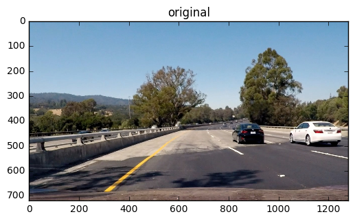
image with multiple bounding boxes
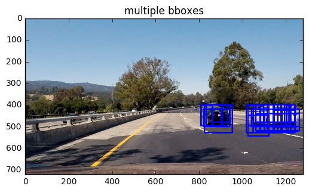
image with heatmap
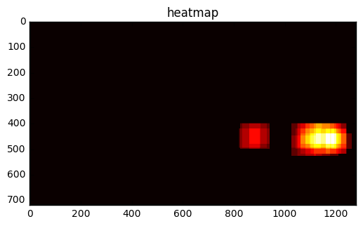
image with label()
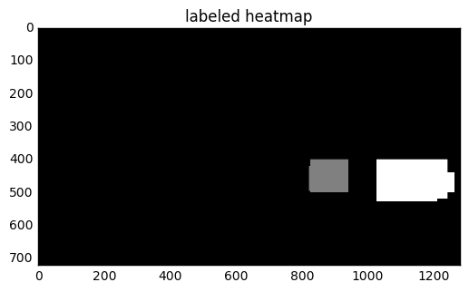
image with final bounding boxes.
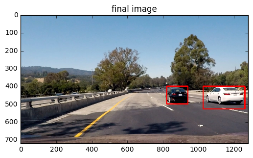
Here's an example result showing the pipeline for a series of frames of video: after recognizing vehicles in each frame, I apply another heatmap for 7 consecutive frames' bounding boxes.
The code can be found in video_process_image() function.
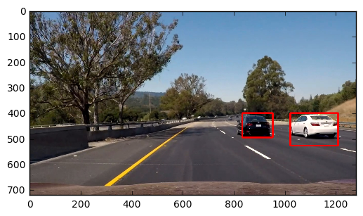
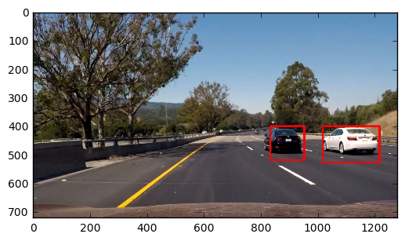
integrated heatmap
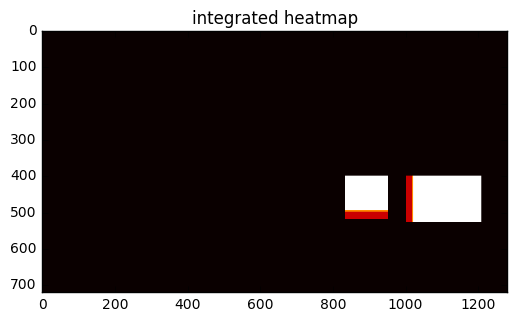
output of applying labels() on integrated heatmap
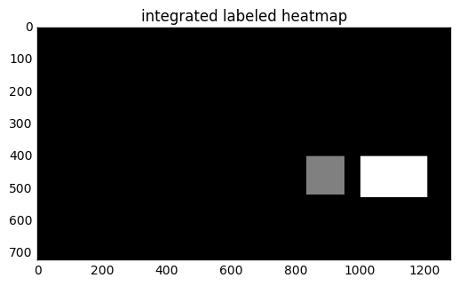
resulting bounding boxes for the last frame
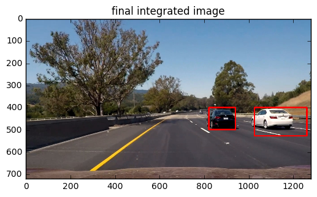
In this case it seems the final integrated bounding boxes are worse (not as tight as) than the ones obtained through single-frame-only pipeline. However, running through the whole video has proved that this approach stabalizes detections significantly.
First I had performance problems: originally my pipeline takes 10 seconds to render one frame, and this means the whole project video takes 3 hours.
I tried to speed up with Python's multiprocessing module, but it did not work well with Jupyter, so in the end I had to import my hog extraction function as a separate module. After that, I was able to render 1 frame per second.
The current pipeline does not work well if there's a car in the middle of the screen, eg. a car right in front. It also does not detect very smoothly when a car just enters the scene.
One potential improvement is to use dynamic window sizes in searching, for example, use larger windows for closer areas and smaller windows for further areas, and align it dynamically with detected lanes.